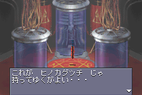
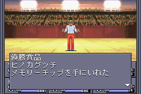

- 카지노 필승 비결 (PS판)
- 주인공, 최강의 삼신기 (GBA판)
- 금강신계의 스테이터스 체크 피하는 방법
- 무상 마사무네 만들기
- 히노카구츠치 작성법
- 청동의 상자로 파괴신 스사노오에게 입수
- 금강신계에서 작성
- 연기의 검부터 작성
- 금강신계의 콜로세움에서 획득
카지노 필승 비결 (PS판)
이 방법은 PS판으로 나온 「진 여신전생 1」, 「진 여신전생 if...」도 동일한 방법입니다.
- 카지노의 KENO 앞에서 중단 세이브
- 중단 세이브를 한 데이터를 다른 메모리 카드에 복사
- 처음 중단 세이브를 행한 데이터를 재개한 뒤 KENO를 해서 번호를 메모한다.
- 다른 메모리 카드의 중단 세이브를 재개해서 기록한 번호를 입력
- 대량의 코인을 획득한다.
이 방법은 GBA판에서 불가능합니다.
주인공, 최강의 삼신기 (GBA판)
다른 기종으로 출시된 것은 확인해보지 못했습니다.
- 돌핀헬름(ドルフィンヘルム) / 반사 정신
- 해골의 연습복(ドクロの稽古着) / 반사 물리 (남성용)
- 스타글로브(スターグローブ) / 흡수 전격
위 3종을 장비하면
화염, 빙결, 충격, 만능 공격에만 유효하고 나머지는 모두 내성을 가지게 됩니다.
돌핀헬름과 해골의 연습복은 旧아카사카 방어구점에서 팔고 있습니다.
스타글로브는 게임 초반 첫 보스인 레드베어가 떨어뜨리는 아이템입니다. 홀리 타운의 카지노 B&S의 8회째 상품으로도 얻을 수 있습니다.
이 삼신기는 「진 여신전생 if...」에서도 동일한 장비 셋팅이 가능합니다.
금강신계의 스테이터스 체크 피하는 방법
금강신계의 스테이터스 요구 사항에 맞추기 어려울 꺼라 생각합니다. 그런데 이걸 회피할 방법이 있습니다. 실험 결과 GBA 판에서도 가능합니다.
- 스테이터스 체크하는 문 앞으로 간다.
- 문을 정면으로 보지 말고 옆을 보면서 좌, 우로 한 칸씩 게 다리를 한다. (B버튼을 누르고 방향키를 누르면 됩니다.)
- 문 바로 앞에서 적이 출현해서 전투를 끝낸다.
- 이제 안으로 들어갈 수 있게 된다.
무상 마사무네 만들기
아래의 방법으로 35레벨에 작성 가능합니다.
旧록본기에서 연기의 검(練気の剣)을 입수한 후, 이하의 합체를 실시합니다.
()안의 숫자는 레벨
- 연기의 검 + 영조 스파르나(15) = 소호환
- 소호환 + 요수 = 풍신검
- 풍신검 + 영조 야타가라스(31) = 비젠 오사후네
- 비젠 오사후네 + 천진신 아메노토리후네 = 명도 호철
- 명도 호철 + 국진신 히토코토누시(35) = 무상 마사무네(無想正宗)
그리고 합체에 필요한 악마를 만드는 방법입니다.
- 귀녀 허그(14) + 요조 벤누(9) = 영조 스파르나(15)
- 마수 + 요귀 또는 데모노이드 = 요수
- 용왕 노즈치(19) + 요마 하오카(27) + 영조 야타가라스(31)
- (비천족 + 귀족) + 마족 = 천진신
- 예) 타천사 우고바크(10) + 지령 스다마(11) + 요정 잭랜턴(13)
- 지모신 타웨레트(26) + 요귀 야크시니(33) = 국진신 히노코토누시(35)
히노카구츠치 작성법

합체 검의 최종 목적은 마인 무기를 제외한 최강의 무기인 히노카구츠치(ヒノカグツチ)를 만드는 것입니다.
모든 속성, 성별에 장비가 가능하고, 소재로 사용해서 최강의 총이나 방어구(여성용)도 만들 수 있습니다
청동의 상자로 파괴신 스사노오에게 입수
파괴신 스사노오를 쓰러뜨리면 히노카구츠치를 떨어뜨리는 일이 있습니다.
쉽게 싸우는 방법은 악마를 부를 수 있는 청동의 상자(青銅の箱)를 사용해서 스사노오를 불러 계속 싸우는 겁니다.(주살 공격이 유효함) 또는 금강신계에 가서 싸우는 방법도 있습니다. 확률은 낮지만 제일 편한 방법입니다.
금강신계에서 작성
금강신계에 출현하는 악마들이 떨어뜨리는 합체 검 소재로 히노카구츠치를 만들 수 있습니다.
| 출현 악마와 떨어뜨리는 아이템 |
| 천진신 타케미카즈치 |
팔속의 검(八束の剣) |
| 국진신 오오나무치 |
천총운(天叢雲) |
| 천진신 츠쿠요미 |
천소모(天沼矛) |
이 소재를 가지고 만들어봅시다.
- 팔속의 검 + 천총운 = 천소모
- 천소모 + 천총운 = 히노카구츠치
연기의 검부터 작성
제일 시간도 많이 걸리는 작업입니다. 연기의 검이 최저 3개가 필요합니다.
일단 旧록본기에서 얻을 수 있는 1개와 나머지 2개는 악마가 떨어뜨리는 것을 얻어야 합니다. '천사 프린시펄리티'나 '요귀 투르다크'에게서 얻을 수 있습니다. 다른 방법으로 나머지 2개는 旧도청에서 얻는 방법도 있습니다. 어차피 후반에 완성하게 되므로 旧도청도 좋은 방법입니다.
연기의 검 (1)
"무상 마사무네 만들기"를 그대로 따라서 만들면 됩니다.
연기의 검 (2)
- 연기의 검 + 영조 스파르나(15) = 소호환
- 무상 마사무네 + 소호환 + 지모신 이슈탈(56) = 천소모
연기의 검 (3)
- 연기의 검 + 영조 스파르나(15) = 소호환
- 천소모 + 소호환 + 천진신 히노카구츠치(44) = 히노카구츠치
금강신계의 콜로세움에서 획득

게임 클리어 이후에 갈 수 있는 금강신계에 콜로세움이 있습니다. 여기서 우승을 하면 랜덤으로 상품을 받게 됩니다. 그 중에 히노카구츠치가 나오는 것을 확인했습니다.